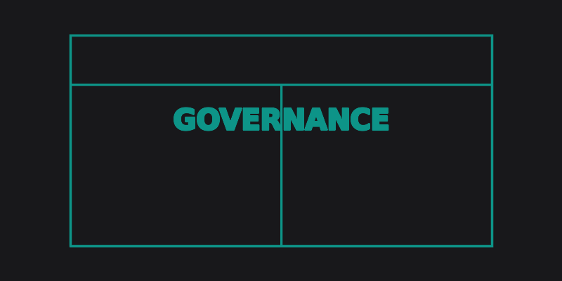
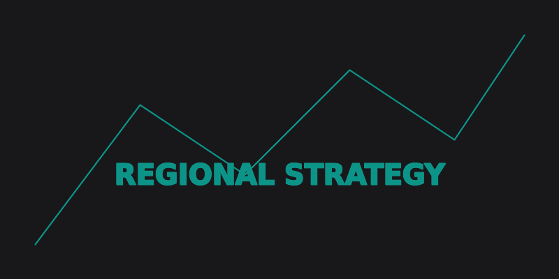

Governance & Finance
Breaking down the 2025 WA State Budget: Where are the regional grants hiding?
A deep dive into the recent state budget allocations, analyzing hidden funding pockets available for proactive regional shires, and how to position your next business case.
Read Full Analysis →
Statutory Compliance
The impending Local Government Act updates: What regional CEOs need to know now.
Significant changes are coming to compliance frameworks. We explore the timeline, the immediate administrative burdens, and how to audit your current delegation structures.
Read Full Analysis →
Strategic Planning
Balancing mining workforce accommodation with long-term community legacy.
Transient workforces create unique pressures on regional infrastructure. Strategies for negotiating favorable outcomes that benefit both industry and permanent rate-payers.
Read Full Analysis →